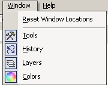

Available Windows
|
 The usefulness of Paint.NET has been greatly enhanced with free floating functional windows. These windows contain the most common and useful paint tools. They are quickly accessible by selecting Window from the menu bar. The Tools Window quick access to the most commonly used paint tools such as a brush, pencil, and a the paint bucket. The History Window allows the user to Undo and Redo actions quickly and effortlessly. The user is not limited to a single undo and redo. The History Window also allows the user to visually select the redo and undo action. The Layers Window allows the user to add and remove layers from the current image. The Colors Window has a color wheel for quick color selection. The Reset Window Locations menu item docks the windows back to their original starting place. If any part of the window is overlapping the canvas it will become transparent. Once the mouse moves over the window it transitions from transparent to opaque. |
|
|